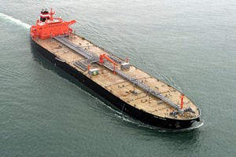
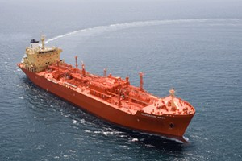
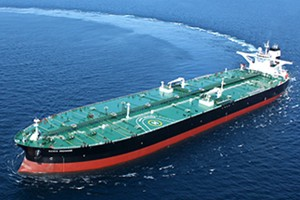
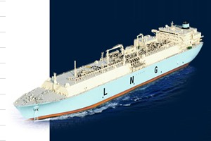

선박부분 제휴회사 소개
| 현대중공업은 일반 상선부터 특수 선종까지 다양한 선박을 건조합니다. 2012년 ‘세계 최초 선박 건조량 1억 GT 달성’, 2015년 '세계 최초 선박 2000척 건조' 등 혁신적인 기술력과 최첨단 시스템을 갖춘 선박 회사 입니다. |
|
|
 컨테이너선 유조선 정유제품운반선 살물선 LNG운반선 자동차운반선 |
|
| 현대미포조선은 1,800TEU급에서 4,300TEU급까지의 컨테이너 운반선과 13,000 DWT급에서 파나막스급 까지의 석유화학제품운반선, LPG운반선, 오픈해치 일반화물선 등을 주요선종으로 하고 있습니다. 이밖에 특수선형의 개발과 품질향상을 통해 세계최고의 중형선박건조 조선소 입니다. | |
|
 석유화학제품운반선 컨테이너운반선 LPG운반선 자동차운반선 벌크선 여객선 |
|
| 국내외 유명 선주사에 연간 50여척의 선박을 인도하고 있으며, 초대형 컨테이너선, 탱커, LNG선, LPG선, 자동차운반선, 벌커 등 거의 모든 상선에 대해 건조 실적을 확보하고 있으며 최근 사업구조 고도화를 위해 FPSO, 드릴십, 반잠수식시추선 등 다양한 사업에 적극 나서고 있으며, 연간 30여기의 각종 산업용 크레인과 벌크 운송설비, 운하 게이트설비 등을 제작하는 산업설비사업도 활발하게 전개하고 있습니다. | |
|

탱커 벌크선 컨테이너선 LNG선 LPG선 자동차운반선 |
|
| STX조선해양은 지난 50여 년 간 800여척에 달하는 선박을 건조, 전세계의 고객에 고효율, 친환경 선박을 제공해 왔습니다. STX조선해양은 생산 효율성 확보를 위해 건조선형을 특화하는 전략으로 나아가고 있습니다. 이미 세계적인 경쟁력을 보유한 중형 탱커, 대형 컨테이너선, 대형 LNG선의 영업과 생산에 집중하여 최고의 가격경쟁력을 갖춘 조선소로 거듭날 것입니다. | |

LNG/LPG선 컨테이너선 탱커선 
대형광석운반선 벌크선 자동차운반선 |
|
| 삼성중공업은창립 이래 1,122척 (‘15년말 기준)의 선박을 수주하여 그 중 1,010척을 성공적으로 인도하며 뛰어난 기술력과 우수한 품질을 인정받고 있습니다. 2008년 세계 최대 크기인 26만6천㎥급 LNG선의 건조를 비롯해 2014년에는 전세계에서 최초로 발주된 초대형 에탄운반선(VLEC) 수주, 2015년에는 21,100TEU급 세계 최대 컨테이너선을 수주하며 고기술·고부가가치선 시장을 선도하고 있습니다. | |
|
 유조선 컨테이너선 LNG선 |
|
| 대우조선해양은 LNG/LPG 운반선, 광탄운반선, 자동차 운반선에 이르기까지 선박 건조능력에 있어서 세계 최고의 기술과 경쟁력을 자랑합니다. 최근에는 고속페리에서부터 초호화 세미크루즈까지 다양한 여객선을 건조하며 급변하는 여객선 시장에 발빠르게 대응하고 있습니다. 잠수함, 구축함 등 많은 해군의 턴키 프로젝트 또한 수행하고 있으며 설계 및 생산효율 극대화를 위한 투자를 지속적으로 하고 있습니다. | |

LNG/LPG선 유조선 컨테이너선 자동차운반선 여객선 살물선 |
|
요트 & 보트 제휴회사


카약 & 카누 제휴회사